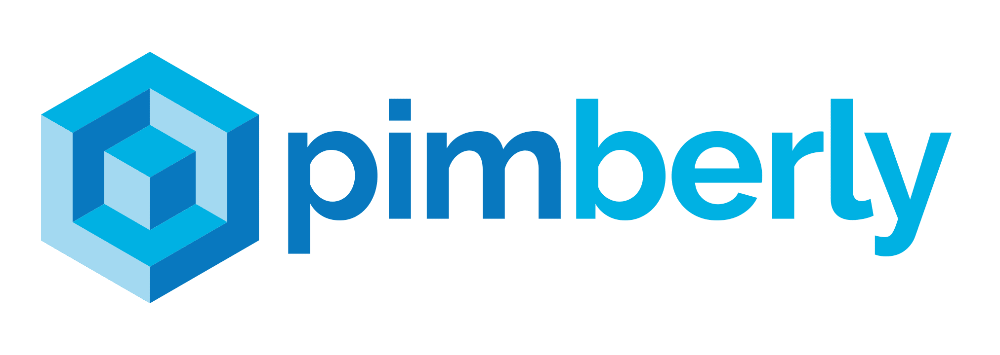

Pimberly
Technical Support Consultant
October 2019 - Present
My role involves using an extensive knowledge of our Product Information Management SaaS solution to help customers make the most of their product data. Through support tickets and phone support I liaise with customers directly to ensure they are not only capable of using the software but are also getting the most out of it's expansive range of features. I am also leading support for Open Range, a data aggregator, while they undertake a massive transformation project to transistion their data management from legacy systems to Pimberly.
Add People
1st Line Web Support
October 2017 - October 2019
Initially my primary role was first line phone support for the web team. As the role progressed and I became more confident with web development and hosting I was given my own product, Wordpress Express, a modular Wordpress theme, built in house, designed to give clients an easily accessible introduction to the Wordpress platform. I act as project manager and developer for these website builds. Alongside delivering WPX websites for clients I am also the sole developer of updates and new modules for the theme. This gives me experience following best practice HTML, CSS and PHP. I also regularly use Bitbucket (Git) and Advanced Custom Fields when working with the theme. I have also been working towards an NVQ level 3 as an Infrastructure Technician, for which I am also involved with internal technical support for the company. Technical Support has given me the chance to work a lot more with server configuration, database management (MySQL), Active Directory and Windows mail server.